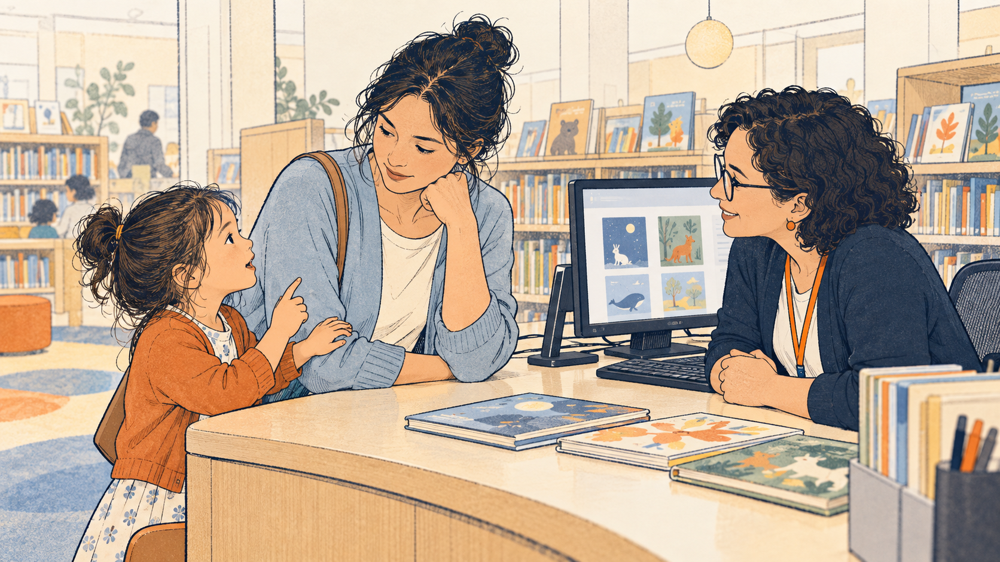
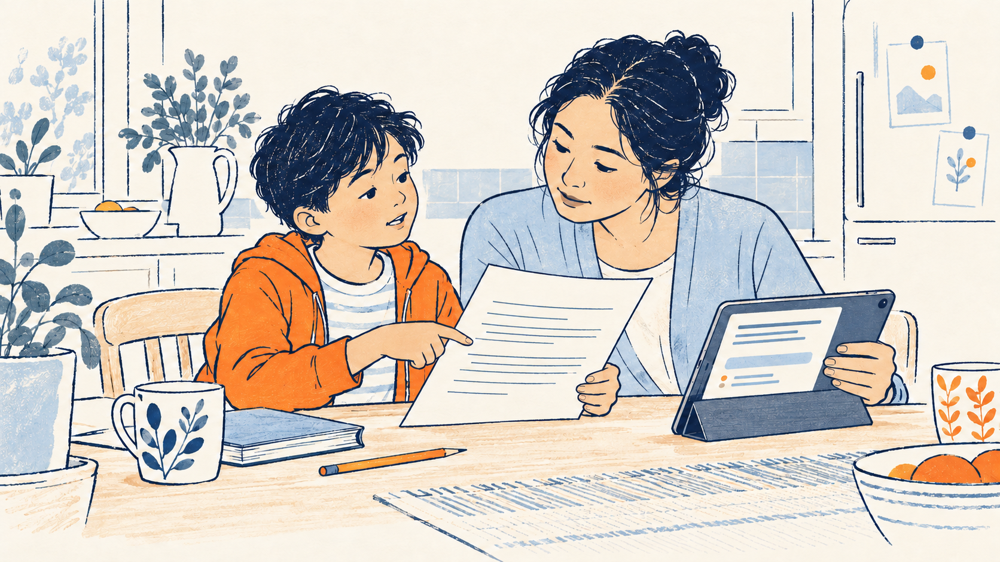
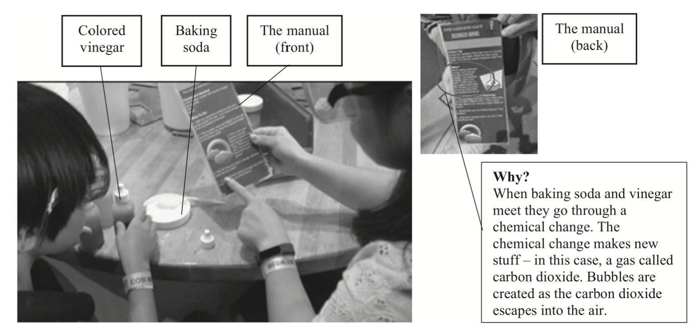
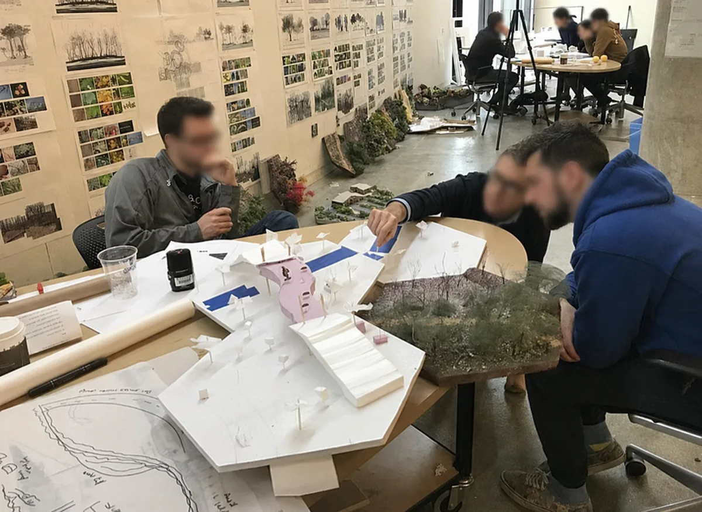

How do people, and the institutions around them, learn to see competence?
Current Projects
My current work extends research on multilingual family learning and professional vision into everyday library encounters and family interaction with generative AI.
Project and application status as of October 26, 2026.
Children's information practices · Public libraries
Finding Books TogetherChildren, Caregivers, and Librarians in Everyday Library Encounters

AI-generated concept illustration inspired by the proposal scenario.
Proposal in preparation Institute of Museum and Library Services (IMLS) · Laura Bush 21st Century Librarian Program · Early Career Research
Finding Books Together asks how young children, caregivers, and librarians shape assistance in everyday book-finding encounters. The proposed study combines contextual fieldwork with microethnographic discourse analysis to trace how children's talk, gestures, corrections, and recognition influence a question, search, or recommendation.
It will also develop case-based learning resources that help children's services staff examine possible responses and compare what follows. The project connects research on children's information practices with professional learning in public libraries.
Learning TogetherHow AI Reshapes Interaction in Multilingual Families

AI-generated concept illustration inspired by the proposal scenario.
Application submitted · Decision pending LEGO Foundation Fellowship · Proposed research
Learning Together asks how generative AI enters multilingual family learning and changes whose knowledge is recognized. Using longitudinal interactional ethnography, the proposed study will follow recurring activities such as shared reading, homework, storytelling, and family inquiry.
It will examine how children and caregivers evaluate AI-generated responses, negotiate participation and authority, and decide when to use, question, refuse, or defer AI. The project aims to inform resources that support shared inquiry, multilingual participation, and productive struggle in family learning.
Earlier fieldwork and established research strands provide the foundation for these new directions. Analysis and publication continue across this work.
Multilingual family learning
Multilingual Family Literacy in Science Museums

This program began my research. In a series of video-based, ethnographic studies, I followed sojourning Korean-English families as they made sense of exhibits in a public science museum. Rather than treating literacy as the decoding of print, I examined how families drew on their full semiotic repertoire, their talk, gesture, gaze, objects, and the museum's own labels and instructions, to reason together.
Two patterns recur across cases. Families translanguage fluidly, layering translations to fit a child's reasoning, reworking a label's wording into successive and more precise options. And institutional texts do more than inform: signage, instructions, and exhibit scripts quietly gate participation and define what counts as literate competence. Reading is often positioned as the sanctioned way into an exhibit, while families' multilingual sense-making goes unrecorded.
The takeaway that drives the rest of my work is that competence is an observable, interactional achievement, and that the artifacts coordinating participation are redesignable. This museum research is the empirical foundation for much of my published scholarship.
Professional Vision in the Architecture Design Studio

In a landscape architecture studio, I study how students, many of them multilingual and international, learn to see and talk like designers. The central site is the desk critique, where an instructor and a student work together over a physical model. Using fine-grained multimodal transcription, I trace how talk, gesture, gaze, and the model itself coordinate to build shared design narratives.
The analysis treats professional vision as an interactional accomplishment rather than a private skill. Students do not simply receive feedback; through pointing, shaping gestures, and shifts of gaze, they author design stories and rehearse imagined movement through space, a biker descending a slope, a pedestrian crossing a path. Instructors' advice-giving opens room for this authoring, and disciplinary ways of seeing laminate across time and imagined scenarios.
This strand extends the concept of professional vision to second-language disciplinary socialization, and it is the methodological home of my interaction-analytic work.
FLOA is a structured training cycle, Observe, Analyze, Reflect, Plan, that I built into literacy methods courses. Its purpose is to slow down interpretation so that preservice teachers replace deficit assumptions with evidence-based noticing of what multilingual families actually do.
Working from video cases and a fieldnote protocol, candidates learn to broaden literacy beyond print to multimodal participation, and to move families' linguistic practices from the background to central evidence of children's meaning-making. The work also names a stubborn limit: even after noticing multilingual competence, candidates often default to English-only lesson plans. That pattern reveals raciolinguistic ideologies as a design problem in teacher learning, not simply an attitude to be corrected.
FLOA connects my family-learning research to teacher education and informs my developing approach to case-based professional learning in public libraries.
My unit of analysis is moment-to-moment participation. Using multimodal interaction analysis and microethnographic discourse analysis of video, I trace how talk, gesture, gaze, objects, and institutional texts coordinate what participants can do next, and what becomes recordable as evidence of competence.
Fine-grained video analysis of this kind remains uncommon in library and information science, where it offers a distinct way to make multilingual family learning legible to institutions.